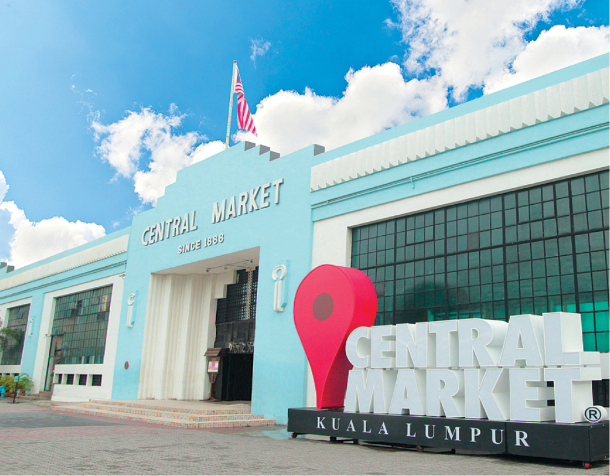

|  |
Central Market is one of KL's most familiar landmarks and a popular tourist attraction. Built in 1928, it is a short walk away from Petaling Street, along Jalan Hang Kasturi. ... Central Market is located on the opposite bank of the Dayabumi Complex and is an art-deco style building with local 'Baroque' trimmings.